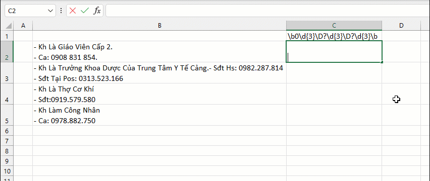
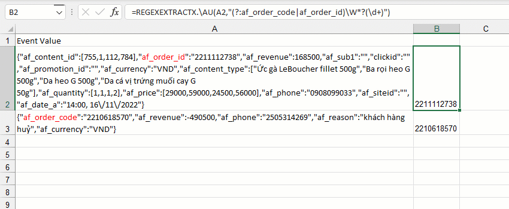
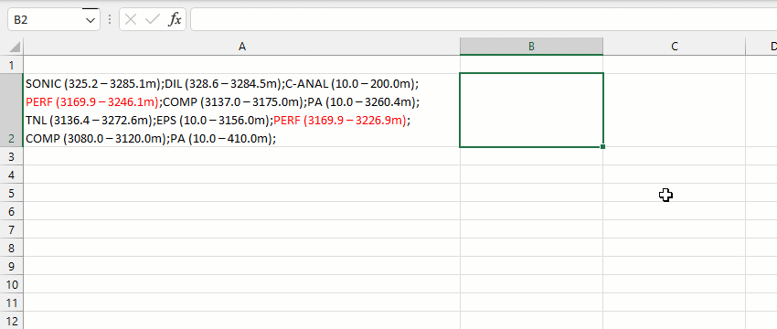
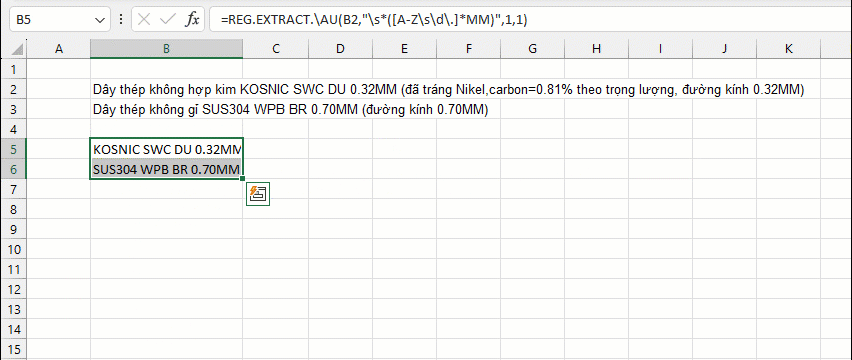
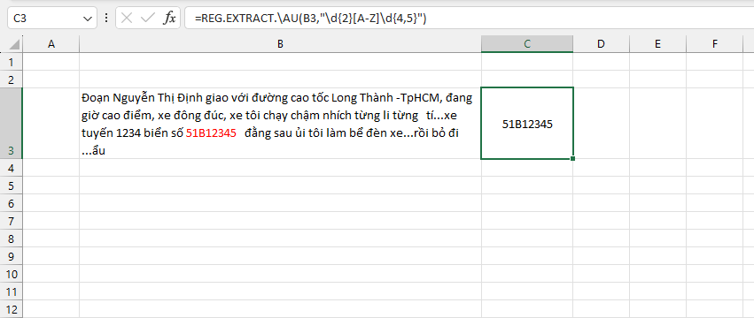
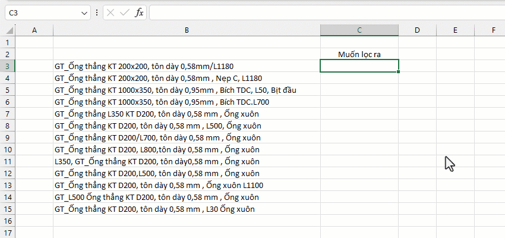

VD1: Thống kê số điện thoại của từng khách hàng.
VD2-1: Trích xuất mã code sau các cụm từ chỉ định.
VD2-2: Trích xuất các cụm từ có định dạng được tô đỏ.
VD3: Trích xuất chuỗi sản phẩm được viết hoa.
VD4: Tách biển số xe.
VD5: Tách chiều dài.
1. Hàm này có rất nhiều biến thể được cung cấp nhưng chủ yếu 3 hàm chính gồm REG.EXTRACT.AU, REG.EXTRACT.\AU và REG.XEXTRACT.\AU
REG.EXTRACT.AU mặc định support unicode, hỗ trợ phân tách một số TEXT format thông dụng (bold,italic,..).
REG.EXTRACT.\AU có thể chỉ định giao diện khác nhau như PCRE, ECMA, REFLEX,.. và hỗ trợ nhiều chế độ khớp (xem đối số [reg_mode]).
REG.XEXTRACT.\AU phiên bản mạnh nhất, cho phép chỉ định khớp MATCH hoặc khớp GROUP.
2. Khi chỉ định khớp GROUP, có thể tận dụng các nhóm không đặt tên (vd: "%(?:\s)(\d)") để chỉ định vị trí khớp dễ dàng hơn.
Related function
REG.REPLACE Thay thế chuỗi con dựa vào biểu thức chính quy (Regular Expression).
Return to Home